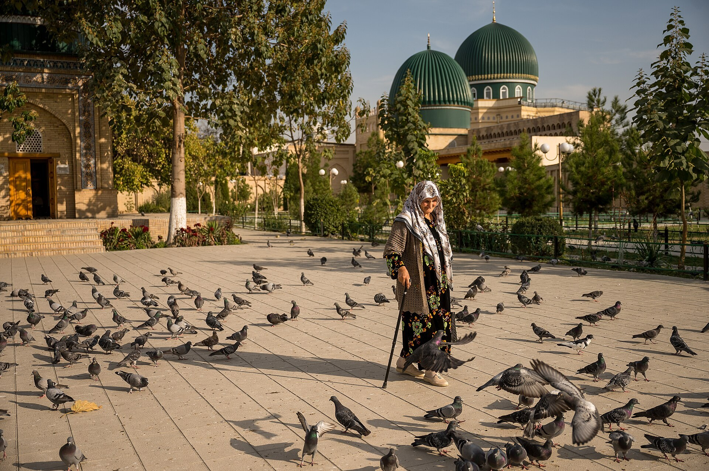

Гражданам Узбекистана в трудной ситуации за рубежом помогут через платформу «Онлайн махалля»
На совещании 2 ноября президент уделил особое внимание защите прав граждан за рубежом: попавший в трудную ситуацию сможет оставить сообщение на платформе «Онлайн махалля», а при необходимости послом лично займётся делом; система заработает в течение 10 дней.

2 ноября на совещании по трудовой миграции президент Шавкат Мирзиёев уделил особое внимание защите прав граждан, работающих за рубежом. По словам главы государства, гражданину в трудной ситуации теперь не придётся искать посла или консула, чтобы попросить о помощи.
Помощь через «Онлайн махаллю»
Гражданин в трудной ситуации сможет оставить сообщение на платформе «Онлайн махалля». При необходимости посол лично свяжется с гражданином, чтобы защитить его права и помочь решить проблему. Президент поручил запустить систему в течение 10 дней и внести предложения по её эффективной работе. Хокимам поставлена задача поддерживать семьи, родителей и детей граждан, работающих за рубежом.
Цифры
Сегодня в международной трудовой миграции находятся 168 млн человек. Хотя число узбекистанцев, работающих за рубежом, за десять лет сократилось вдвое, объём отправляемых ими домой средств вырос вчетверо. Но разрыв между регионами велик: средний месячный денежный перевод на одного работающего за рубежом в Ферганской области составляет $1 850, а в некоторых регионах не достигает и $400.

Занятость вернувшихся
На совещании рассмотрели и вопрос занятости вернувшихся из трудовой миграции. С начала года домой вернулись 1 116 000 человек; среди них специалисты с опытом работы за рубежом в промышленности, строительстве, логистике и сфере услуг. Хокимам и отраслевым руководителям поручено использовать их потенциал и предлагать достойную работу.
Официальное заявление
Ни один наш соотечественник, работающий за рубежом, не должен оставаться со своими проблемами один на один.
— Шавкат Мирзиёев, президент Узбекистана